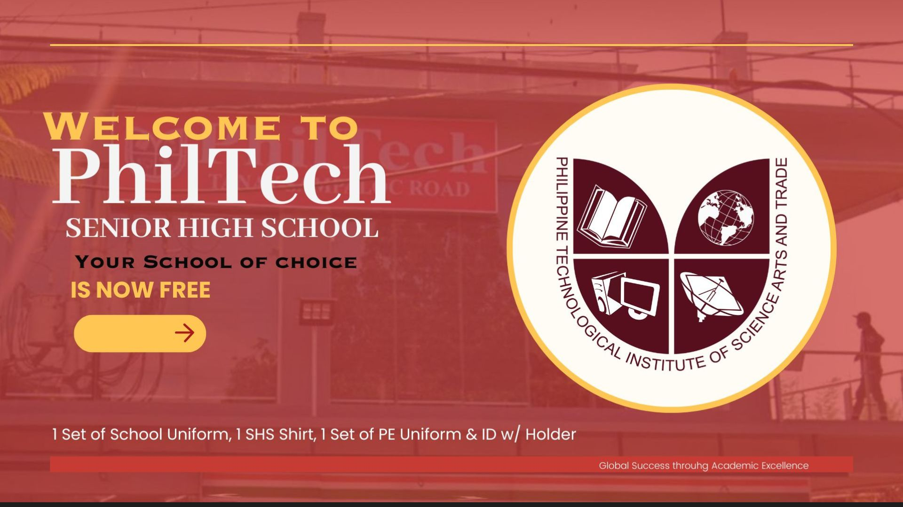

Enrollment System
My first system developed during senior high school using Visual Basic for PhilTech. This project helped me develop problem-solving skills and sparked my passion for software development.
A student exploring the world of programming.
I like playing games most of the time.
I loved listening to music.
I'll never say no to a good cup
J-dramas and K-dramas enthusiast
Love reading manhwa and manga
When I like something, I give it my best effort to make sure it turns out well. This passion keeps me focused, motivated, and excited to learn new skills. I'm driven by my desire to improve and create more because I believe every skill I learn is a step closer to becoming the person I aspire to be. My ultimate goal is to become a programmer whose work stands out for its quality and creativity.
My first system developed during senior high school using Visual Basic for PhilTech. This project helped me develop problem-solving skills and sparked my passion for software development.
A C# kiosk-style ordering system inspired by fast-food chains like Jollibee and McDonald's. Features 6 kinds of pizza and various beverages with a user-friendly interface for seamless ordering.
Developed a C# system to track and monitor computer users at specific times for Laguna State Polytechnic University CCS. Handled challenges with user input validation and false information detection.